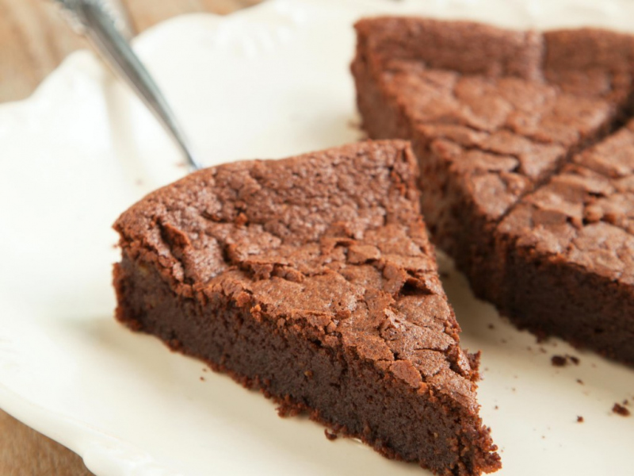
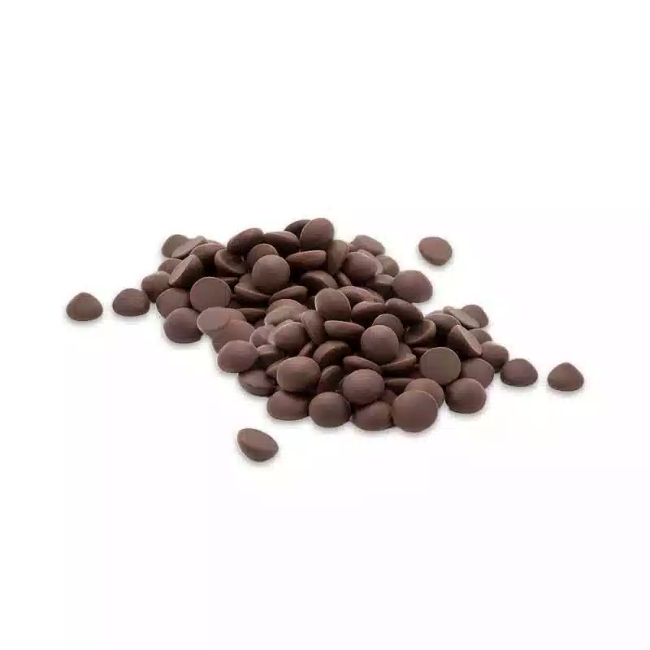
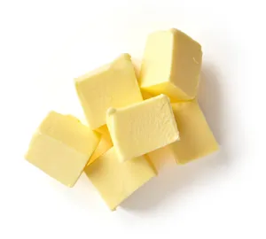
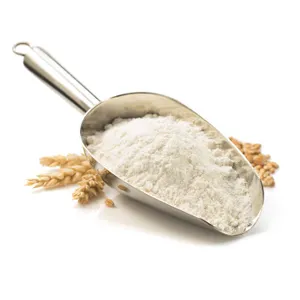
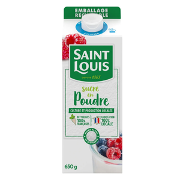
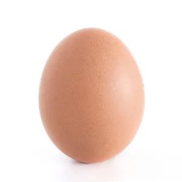

GourmeTech
Gâteau au chocolat

favorite
Dessert
45 min
Facile
Liste des ingrédients :
- 200g de chocolat
- 100g de beurre
- 50g de farine
- 100g de sucre
- 3 oeufs
Préparation :
- Préchauffez votre four à 180°C (thermostat 6). Dans une casserole, faites fondre le chocolat et le beurre coupé en morceaux à feu très doux.
- Dans un saladier, ajoutez le sucre, les oeufs, la farine. Mélangez.
- Ajoutez le mélange chocolat/beurre. Mélangez bien.
- Beurrez à l'aide d'une feuille de papier essuie-tout et farinez votre moule puis y versez la pâte à gâteau.
- Faites cuire au four environ 20 minutes.
- A la sortie du four le gâteau ne paraît pas assez cuit. C'est normal, laissez-le refroidir puis démoulez- le.
Recettes similaires
- Moelleux au chocolat
- Muffin au chocolat
- Cake au chocolat